第四章 基本平面图形·培优卷
【北师大版2024】
时间：120分钟 满分：120分
姓名：___________班级：___________考号：___________
考卷信息：
本卷试题共24题，单选10题，填空6题，解答8题，满分120分，限时120分钟，本卷题型针对性较高，覆盖面广，选题有深度，可量化学生的掌握程度！
一、选择题（本大题共10小题，每小题3分，满分30分）
1．（25-26六年级上·黑龙江大庆·阶段练习）下列说法错误的是（ ）
A．圆内最长的线段是直径
B．圆的周长是直径的π倍
C．半径2厘米的圆的圆周率比直径3厘米的圆的圆周率大
D．用同一根绳子围成长方形、正方形和圆形，圆的面积最大
2．如图，M是线段AB的中点，N是线段BM上一点，下列各式可以表示MN的长度的是（ ）
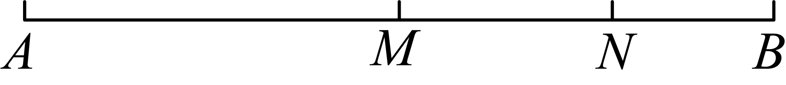
A．AB−BN B．12AN−AM C．AN−BM D．12BM
3．（24-25七年级上·江苏徐州·期末）已知某正八边形的一边长为2，则该正八边形的周长为（ ）
A．12 B．15 C．16 D．18
4．（25-26六年级上·黑龙江绥化·期中）一架飞机向东偏北45°方向飞行，接到指令后，改向相反的方向飞行，那么这架飞机向（ ）方向飞行．
A．东偏南45° B．西偏南45° C．西偏北45°
5．如图，建筑工人在砌墙时，经常用细线绳在墙的两端之间拉一条直的参照线，这样做的依据是（ ）
A．两点之间，线段最短 B．两点确定一条直线
C．两点间距离的概念 D．以上都不是
6．（24-25七年级上·山西太原·阶段练习）下列四个图中，能用∠1，∠AOB，∠O三种方法表示同一个角的是（ ）
A．
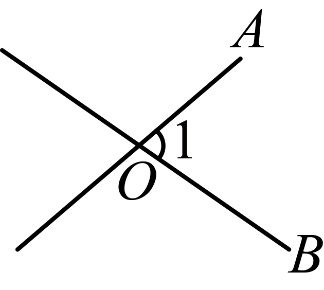
B．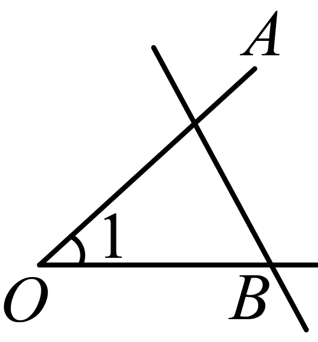
C．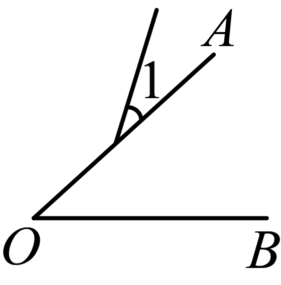
D．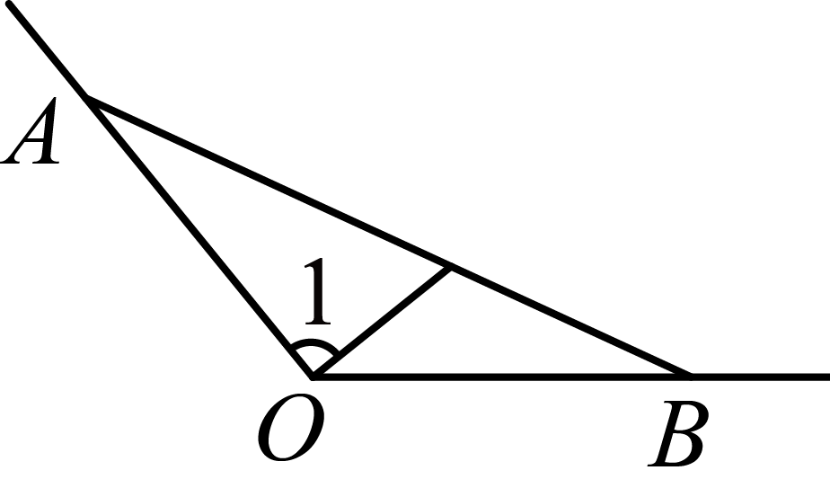
7．（25-26七年级上·全国·期末）如图，C是线段AB上一点，D，E分别是线段AC，BC的中点，若AB=16，AD:BE=3:1，则BE的长为（ ）
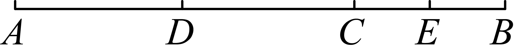
A．4 B．3 C．2 D．32
8．如图1，图2所示，把一副三角板先后放在∠AOB上，则∠AOB的度数可能（ ）
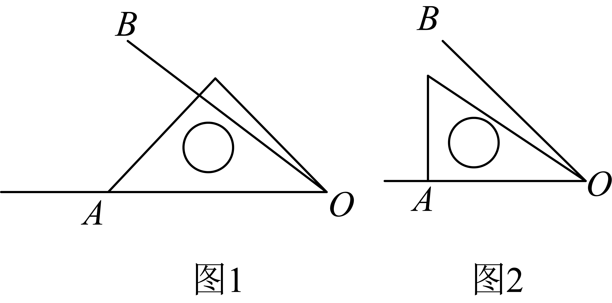
A．60° B．50° C．40° D．30°
9．如图，点P在线段AB的延长线上，BP=64，记线段AP和AB的中点分别为P1，B1；线段AP1和AB1的中点分别为P2，B2；线段AP2和AB2的中点分别为P3和B3；⋯，依次进行这样的标记，则B1P1+B2P2+B3P3+B4P4+B5P5+B6P6=（ ）
A．62 B．63 C．64 D．65
10．如图，按照上北下南，左西右东的规定画出方向十字线，∠AOE＝m°，∠EOF＝90°，OM、ON分别平分∠AOE和∠BOF，下面说法：
①点E位于点O的北偏西m°；②图中互余的角有4对；③若∠BOF＝4∠AOE，则∠DON＝54°；④若∠MON∠AOE+∠BOF=n，则n的倒数是23，其中正确的有（ ）

A．3个 B．2个 C．1个 D．0个
二、填空题（本大题共6小题，每小题3分，满分18分）
11．（24-25七年级上·江苏泰州·期末）弯曲的公路改直后就能缩短路程，可以用数学知识的基本事实来解释为 ．
12．若一个多边形截去一个角后，得到的新多边形为十五边形，则原来的多边形边数为 ．
13．上午10时30分，时针与分针成
14．（24-25七年级上·重庆巴南·期末）如图，直线上有A、B、M、N、Q五点，点M是线段AB的三等分点，点N是线段AB的中点，点Q是线段AB延长线上一点，且AQ=2AB−MQ，则NQBQ的值为 ．
15．（2025七年级上·全国·专题练习）如图所示，把一个圆沿着半径剪开，再拼成一个近似的长方形．这个近似长方形的周长比原来圆的周长增加了6厘米，这个圆的半径是 厘米，这个圆的面积是 平方厘米．
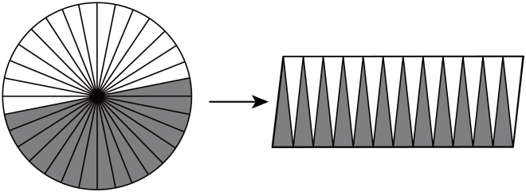
16．（24-25七年级上·重庆·期末）如图，已知∠AOB=102∘，∠COD=30∘，∠COD在∠AOB的内部绕点O任意旋转，若OE平分∠BOC，则2∠AOE+∠BOD的值为 ．
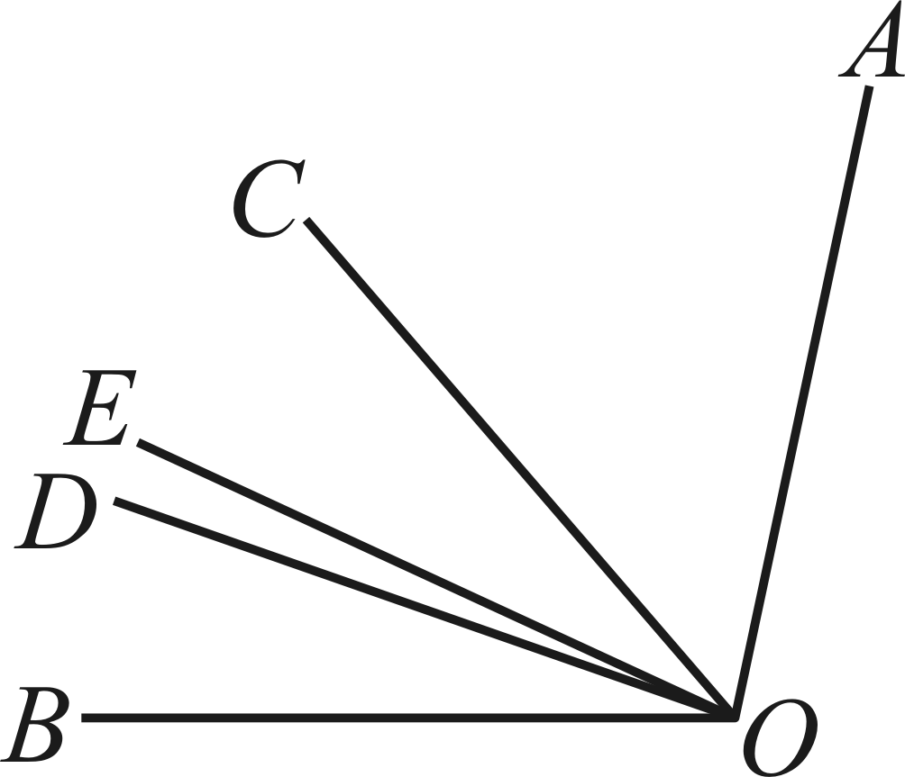
三、解答题（本大题共8小题，满分72分）
17．（6分）（25-26七年级上·全国·课后作业）计算：
(1)48°39′+67°31′；
(2)125°12′−21°46′；
(3)90°−48°35′；
(4)20°17′×5．
18．（6分）如图，平面上有A、B、C、D四个点，根据下列语句画出图形：
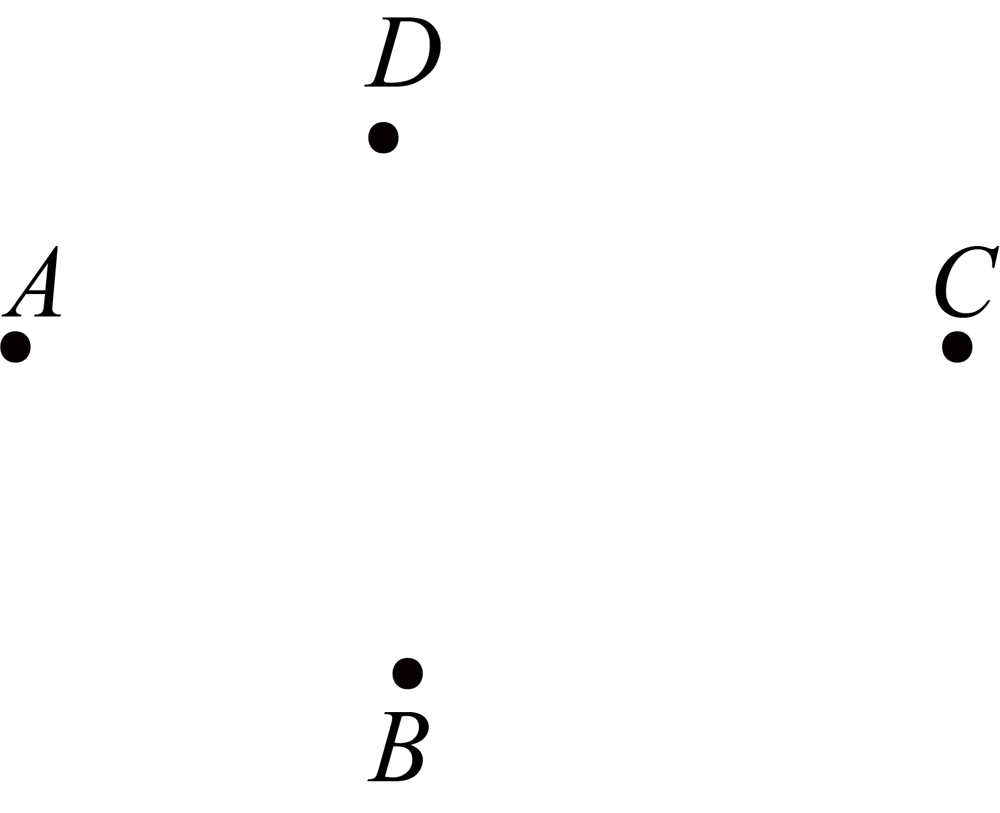
(1)连接AC、BD；
(2)用尺规在线段AC上作一条线段CF，使得CF=AC−BD．（不写作法，保留作图痕迹）
19．（8分）（24-25七年级上·湖北武汉·期末）如图，延长线段AB到点C，使BC=12AB，点D为AC的中点．
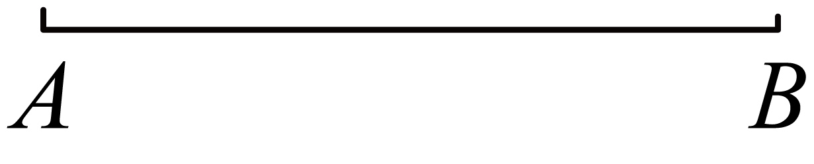
(1)若AB=8，请补齐图形并求线段BD的长；
(2)若F为BC的三等分点，则BFAD的值为 ．（直接写出结果）
20．（8分）如图∠AOB:∠BOC=1:4，OM平分∠AOB，∠BON：∠NOC=3:1，若∠MON=91°，
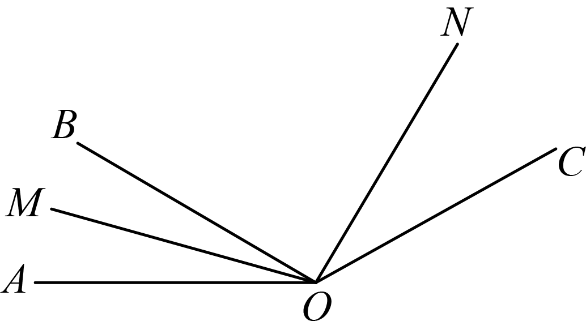
(1)∠AOB ∠NOC（填“＞”或“＜”或“=”）；
(2)求∠AOC 的度数．
21．（10分）如图1，点C在线段AB上，BC=2AC．P，Q两点同时从点C，B出发，分别以1cms，2cms的速度沿直线AB向左运动，当点P达点A时，两点立即停止运动．
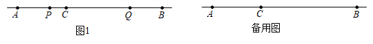
（1）APCQ的值是______；
（2）取PQ中点M，CQ的中点N．求MNQB的值．
22．（10分）（25-26九年级上·广东东莞·期中）探究归纳题：

【试验分析】
（1）如图①，过点A可以作1条对角线；同样，经过点B可以作1条对角线；经过点C可以作1条对角线；经过点D可以作1条对角线；且对角线AC与CA为同一条．通过以上分析和总结，图①共有________条对角线；
【拓展延伸】
（2）运用（1）的分析方法可得：图②每个顶点出发有________条对角线，共有________条对角线；图③共有________条对角线；
【探索归纳】
（3）对于n边形n>3，共有________条对角线（用含n的代数式表示）；
【特例验证】
（4）十边形共有________条对角线．
23．（12分）（24-25七年级上·全国·期末）如图，甲乙两船从B港口同时出发反向而行，甲船顺水，乙船逆水，两船在静水中速度都是50km/h，水流速度为akm/h，5h后两船同时到达A、C两港口，卸装货物后，又同时出发，甲船驶往C港口，乙船驶往A港口．
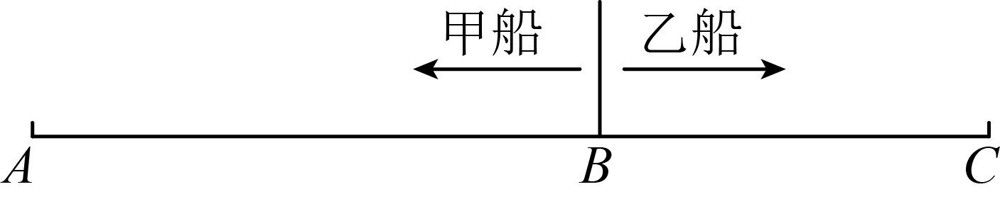
(1)A、C两港口相距多远？
(2)AB港口间比BC港口间多多少千米？ （用含a的代数式表示）
(3)卸装货物后同时出发，两船又经过多少小时相遇？ 若相遇处距B港口 50千米，求甲船还需几h到达C港口？
24．（12分）（24-25七年级上·陕西西安·期末）如图1，射线OC在∠AOB的内部，图中共有3个角：∠AOB、∠AOC和∠BOC，若这三个角中，其中有一个角的度数是另一个角度数的2倍，则称射线OC是∠AOB的美妙线．
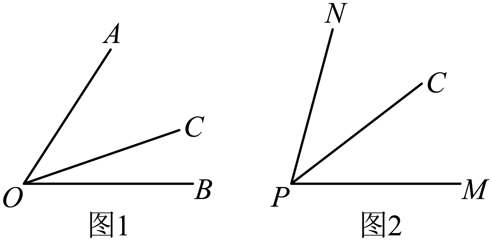
如图2，若∠MPN=75°，PC是∠MPN的平分线：
(1)射线PC______∠MPN的美妙线．（填“是”或“不是”）
(2)如图2，射线PA绕点P从PC位置开始按逆时针方向旋转α度0°<α<37.5°，当旋转的角度α等于多少度时，射线PA是∠MPN的美妙线？
(3)射线PQ绕点P从PM位置开始，以每秒10°的速度按逆时针方向旋转，同时射线PN绕点P以每秒5°的速度按逆时针方向旋转．设旋转的时间为t秒(0<t<15)，请求出当射线PQ是∠MPN的美妙线时t的值．